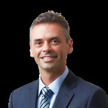

Mutual Trust and the University of Adelaide
Business School Publication
Why the Modern
Family Office Matters
Mutual Trust’s Purpose
Our Purpose is to help families achieve what matters most.
We pride ourselves on:
- Caring for our families, our people and communities, not just their finances
- Delivering what they require under one roof
- Providing pre-eminent independent advice
- Enabling our families to have a positive impact on society.
We do this with people who are excellent, heartfelt, inspiring and principled.
In doing so, we will be the exceptional Multi-Family Office.
Mutual Trust acknowledges and honours the traditional custodians of the lands upon which we work. In Melbourne, we work on the lands of the Wurundjeri People of the Kulin Nation. In Sydney, we work on the lands of the Gadigal people of the Eora Nation. In Adelaide, we work on the lands of the Kaurna people of the Adelaide Plains. In Perth, we work on the lands of the Whadjuk people of the Nyoongar nation. We pay respect to Elders past, present and emerging.
Mutual Trust’s definition of a Family Office
The functional infrastructure made up of people, systems and processes that supports a Family Enterprise in planning, managing, transferring and perpetuating wealth in an integrated way across generations to achieve what matters most to the family, as well as sustain the positive contributions they make to society.
The support from a Family Office can extend to family advisory, family governance and decision-making processes, education of family members, intergenerational wealth transfers, asset protection, philanthropy, financial administration, tax compliance and investment management. A Family Office is not necessarily a legal entity, physical location or organisational structure, although it will often take on many of these traits as a family’s wealth grows.
What is a Family Enterprise?
A Family Enterprise is defined as the collective activities of a family of significant wealth or an individual of significant wealth and their family members. These activities encompass the family’s entrepreneurial, philanthropic and investment endeavours, governance, taxation compliance, development of the rising generation and succession and estate planning, and family engagement pursuits.
The term ‘Family Enterprise’ may also encompass the family’s operating businesses.
Methodology
The research referred to in this report comprises two primary research reports authored by Associate Professor, Dr. Chris Graves, from the University of Adelaide:
- The Phase 1 report: The Role of Family Offices used research derived from three resources: insights gained from previous survey reports of the Australian Family Office sector; insights gained from a review of the latest literature on Family Enterprises and Family Offices from around the world; and insights gained from interviews conducted by the University of Adelaide with Family Office experts in the field both in Australia and overseas. Interviews were transcribed and analysed using NVivo. This process identified several themes that were grouped according to the broad research questions that were the focus of Professor Graves’ study.
- For the University of Adelaide’s Phase 2 report: Insights from Family Enterprise Leaders, information provided was derived from insights gained from interviews of ultra-high-net-worth (“UHNW”) family leaders. Specifically, a qualitative analysis of interviews with 27 family leaders was undertaken by the University of Adelaide.
The University of Adelaide’s two-phased reports received funding and in-kind support from Mutual Trust and received a research grant from the South Australian Government’s Research and Commercialisation and Start-up Fund.
This report was written and produced by Mutual Trust. In addition to containing research and data from the University of Adelaide, it features insights of senior advisors who have deep expertise supporting some of Australia’s wealthiest families, outlining the framework Mutual Trust uses to help UHNW families formulate their strategies for success. This includes encouraging and empowering family members to flourish – professionally and personally – as well as underpinning the continued growth and transfer of significant wealth to future generations.
All participants quoted in this report have provided their consent to disclose their story, however, details such as names and places have been changed for privacy reasons.
Table of Contents
- Welcome 8
- Introduction 10
- Section 1: The positive socio-economic impact of wealthy families 12
- Section 2: How Family Offices help wealthy families 18
- Section 3: Modern Family Office practices make a difference 28
- Conclusion 50
- Contributors to this report 52
- References 60
Welcome
It is with great pleasure that we welcome readers to our Family Office Report. It explores the practices adopted by wealthy families that enable them to succeed in passing their wealth on to future generations, and how the probabilities of success significantly improve with the help of a modern Family Office. This report outlines the multi-faceted approach that a modern Family Office takes to assist families in creating a long-term strategy for their success. It outlines the different configurations Family Offices can take and the criteria by which families can decide the model that would suit them best. A first of its kind in Australia, the report draws on the academic research and findings of the University of Adelaide and has been prepared by Mutual Trust.
Each generation faces serious wealth-preservation challenges which, if not carefully managed, can lead to the erosion not only of wealth but of family entrepreneurship, harmony and unity. There are also significant implications for Australia’s prosperity and societal welfare.
Families of wealth are vital to the Australian economy, providing large numbers of jobs, capital, business innovation and community support. This is put at risk if wealthy families are not effectively supported. If the leading strategic practices of Australia’s most successful Family Offices are adopted by families of wealth, then more private capital will be grown and deployed – for the benefit of the families themselves, the economy and society.
Mutual Trust, as a Multi-Family Office, has more than 100 years of experience in helping families successfully manage their intergenerational wealth by adopting our proven multi-faceted, purpose-led approach. We express our gratitude for the contribution of our research partner, the University of Adelaide. Our warmest appreciation goes to Mutual Trust’s clients who have put their deep trust in us. We also thank many of you for your generous contribution to this publication in sharing your insights and experience.
Yours sincerely,
Phil Harkness
Mutual Trust CEO
and Managing Partner

Jeff Steiner
Partner,
Head of Family Office
“We have seen first hand that when Family Enterprises work together purposefully, they are a powerful force. They deploy their capital to expand their businesses, employ people, build infrastructure, invest in innovation, back start-up ventures and give thoughtfully and strategically to charities. As their success grows, they also pay more tax which stimulates the economy. The economic multiplier effect of their pursuits and activity is considerable.”
PHIL HARKNESS, CEO AND MANAGING PARTNER, MUTUAL TRUST
“Just imagine the entrepreneurial, philanthropic, financial and personal energy that can be unlocked if every Family Enterprise has a clear sense of purpose for its wealth and a strategy to execute it.”
JEFF STEINER, PARTNER, HEAD OF FAMILY OFFICE, MUTUAL TRUST
Introduction
As highlighted in the research findings of this study, Family Enterprises are a significant contributor to Australia’s prosperity and societal wellbeing. Consequently, the continuity of Australian Family Enterprises is in everyone’s interests.
With the ‘great wealth transfer’ upon us, where an estimated AUD$3.5 trillion of wealth globally is anticipated to be passed between generations from now until 2030, it is more important than ever for Family Enterprises to adopt an appropriate Family Office model to assist them in planning, managing, transferring and perpetuating the contribution of their wealth across generations.
By adopting an appropriate Family Office model for managing their wealth, Family Enterprises can multiply the impact their wealth has on the broader economy. This research highlights that every one percentage point improvement in annual return on the wealth managed by Australian Family Offices results in greater employment opportunities by way of job creation and therefore an increase in Gross Domestic Product and tax contributions.
The reality is many Family Enterprises do not have an appropriate Family Office model in place to effectively manage their wealth for the future. This is because:
- they are not aware of alternative Family Office models and configurations and/or
- they struggle to transition to a more appropriate model and/or
- believe it is too costly and/or
- the broader family does not support a change to wealth-managing transformation.
It is my hope that this research contributes towards a better understanding of the nature and purpose of Family Offices and how the selection of an appropriate Family Office model with modern practices, can assist a Family Enterprise to achieve what matters most to the family as well as boost the positive societal contribution they make.
I would like to thank the Government of South Australia and Mutual Trust for funding this important piece of research. I would also like to thank the Family Enterprise advisors and leaders who willingly gave up their time to be interviewed as part of this research. This project has been a great example of how industry, government and academia can work together to advance knowledge for the betterment of society.
Wealthy families have a significant positive socio-economic impact on Australia
Families of wealth are vital to the Australian economy:
- Their Family Enterprises provide large numbers of jobs to the private sector, employing 6.32 million Australians.
- As a result, they pay AU$294 billion in wages, 48.3% of total private-sector wages each year.
- They play an important role in the Australian private equity and venture capital sector, providing 7% of the total sector funding. Also providing essential funding to small projects and businesses not supported by those private equity and venture capitalists who favour bigger projects.
- Wealth invested outside their operating businesses have a significant impact on the economy. The 350 largest Family Offices manage between AU$515 billion and AU$695 billion of wealth outside their operating businesses. The investment of this wealth led to 446,000 to 600,000 new full-time jobs, which in turn generated AU$38 billion to AU$51 billion in further wages and AU$3.6 billion to AU$5 billion in additional tax payments (excluding personal income tax).
- They contribute around AU$1 billion each year to educational support and poverty alleviation for those most disadvantaged, as well as scientific research, technological advancements, arts and health-oriented philanthropic activities.
Research undertaken by the University of Adelaide shows that every one percentage point improvement in annual return on the wealth managed by Australian Family Offices will result in:
- The creation of between 35,700 to 48,000 full-time jobs;
- AU$3.1 billion to AU$4.1 billion in wages;
- AU$5.8 billion to AU$7.8 billion in Gross Domestic Product; and
- AU$290 million to AU$390 million in direct taxes (excluding personal income tax).
The total number of Australia’s wealthy families is expected to increase by 28.5% from 2020 to 2024 adding a multiplier effect to these benefits.
The impact of family wealth is more than economic. It includes involvement in philanthropic and responsible investment activities, with family members working together with a shared purpose to achieve an impact in the communities in which they live, and build self-efficacy of the next generation of family members.
Families of wealth are vital
to the Australian economy
6.32
MILLION
AUSTRALIANS EMPLOYED
by Family Enterprises in the private sector.
7%
OF TOTAL FUNDING
provided to Australian Private Equity & Venture Capital sector.
$294
BILLION
IN WAGES PAID
48.3% of total private-sector wages each year.
THE 350 LARGEST FAMILY OFFICES INVEST IN NON-FAMILY-OWNED ENTERPRISES
$515–695
BILLION
INVESTED
outside their operating businesses in 2021.
$3.6–5.0
BILLION
IN TAX PAYMENTS
excluding personal income tax.
28.5%
EXPECTED INCREASE IN THE NUMBER OF AUSTRALIA′S WEALTHY FAMILIES BY 2024
adding a multiplier effect to these benefits.
Lasting positive socio-economic impact depends on wealthy families prospering for generations
With AUD $3.5 trillion of wealth expected to pass between generations in Australia over the next two decadesi, there are significant economic and societal well-being benefits at risk if this intergenerational wealth transfer is not managed effectively.
A wealth transfer is unsuccessful if it involuntarily removes a family’s wealth from the control of the beneficiariesii. If the form of a family’s assets is changed, e.g. a family business is sold and converted to cash, that is a recycling of wealth, not an unsuccessful transfer. Similarly, if families choose to ‘unbundle’ their assets, e.g. distribute capital to family branches or individual beneficiaries, then that is a change in the ownership structure, not an unsuccessful transfer.
Of the reasons why intergenerational wealth transfers are not successful, 60%iii are attributed to two key things; a lack of communication and/or a breakdown of trust.
The remaining 40% is attributed to insufficient preparation of heirs (25%); families not defining their Purpose of Wealth (12%); and, poor investment advice (3%). Many families focus on just the 3% driver of wealth – investment advice – rather than the more important components that contribute to success.
Focusing on communication is vitally important. It builds trust among family members, helps make family members’ aspirations clearer, and results in better decision making as there is better understanding within the family of the facts involved. Every family (and each family member) has its own set of complexities, and transparent discussions can help to address concerns.
The second most important factor for success is to ensure the younger members of the family are equipped with the tools and experience they need to lead and manage family wealth. In doing so, families can focus on education and engagement of individual family members in conjunction with the family as a collective. Families who build awareness around family affairs, history and legacy often break down the “generational barriers,” building trust and confidence that family wealth will be preserved, and future actions will align with the family’s Purpose of Wealth.
The third most important success factor is defining the family’s Purpose of Wealth. Each family member is different and driven in unique ways. A successful family can define the ‘how’ of applying their wealth for different familial purposes while leveraging the individual strengths of each family member. They value their differences and support personal passions. This encourages each family member to live a productive, healthy and fulfilled life.
In Mutual Trust’s experience, families who have addressed these non-financial challenges are more likely to thrive and be successful in passing their wealth to future generations than those who don’t. And in turn, their positive socio-economic impact on Australia is more likely to continue.
Reasons wealth transfers
are unsuccessfuliv
According to global research 97% of family wealth is lost due to non-financial reasons.
- Lack of communication and trust within the family 60%
- Failure to prepare inheritors 25%
- Lack of shared family purpose 12%
- Failures in financial planning, tax planning and investments 3%
Mutual Trust Case Study
Impact of the Trentini Family
Upon their arrival in Australia, the Trentini* family purchased 150 hectares of land in south-western Victoria with the intention of establishing a dairy farm. What they didn’t foresee was the profound positive impact the ongoing growth of the farm would have on their local community.
Already experienced in dairy farming through their upbringing in Lombardia Italy, it didn’t take long for the Trentinis to build a successful farm which supplied dairy products to local businesses.
Over time, as the farm grew in size and profitability, so did the Trentini family wealth. What was once a small Family Enterprise had now become a key contributor to Victoria’s milk production.
Through the success of this Family Enterprise, today the dairy farm provides more than 200 local full-time jobs, paying generous wages and superannuation contributions to members of the community.
The Trentinis are passionate about investing their wealth back into the region that first welcomed them in 1954. They purchase their grain, equipment and other farm supplies from local businesses and hire local staff. In 2004, they bought the tired town pub and invested a portion of their wealth into renovating and creating a welcoming space to bring the community together. Over the following decade, they established a boutique B&B in addition to the pub, attracting tourists and visitors to the area. This generated further opportunities for paid work and created more business for local suppliers.
When fires swept through the region in 2018, the Trentinis used their pub to provide free accommodation and meals to locals who had lost their homes. They were also in a position to donate a considerable sum of money to support local recovery and rehabilitation efforts.
The third generation of the Trentini family remains actively involved in the community by sponsoring the local football and netball clubs, along with other community initiatives to ensure their family wealth continues to enrich and give back to the region they are proud to call home.
* Family name has been changed for privacy reasons.